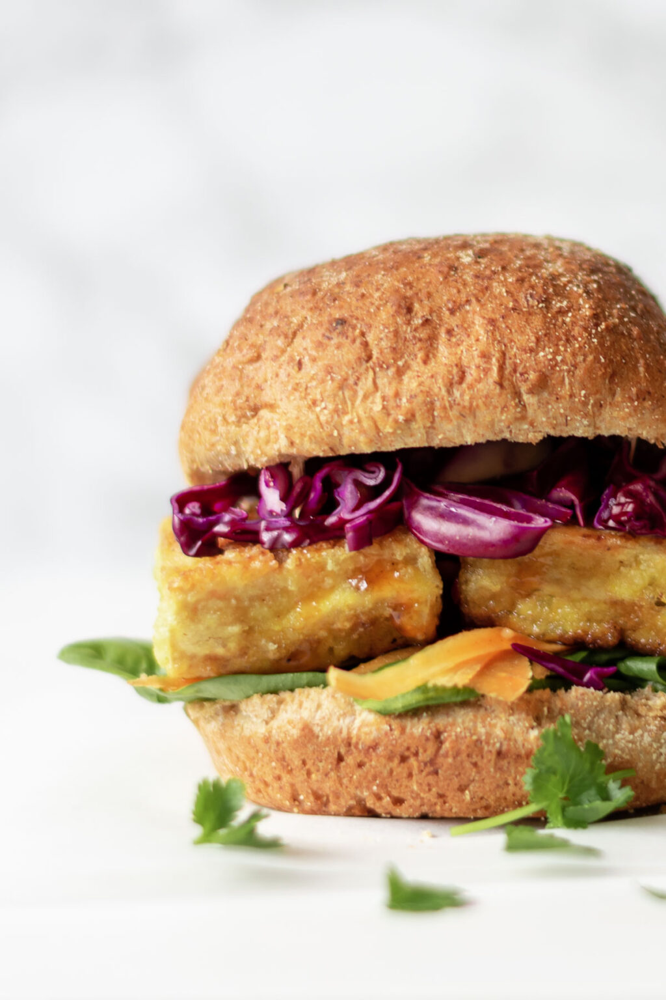
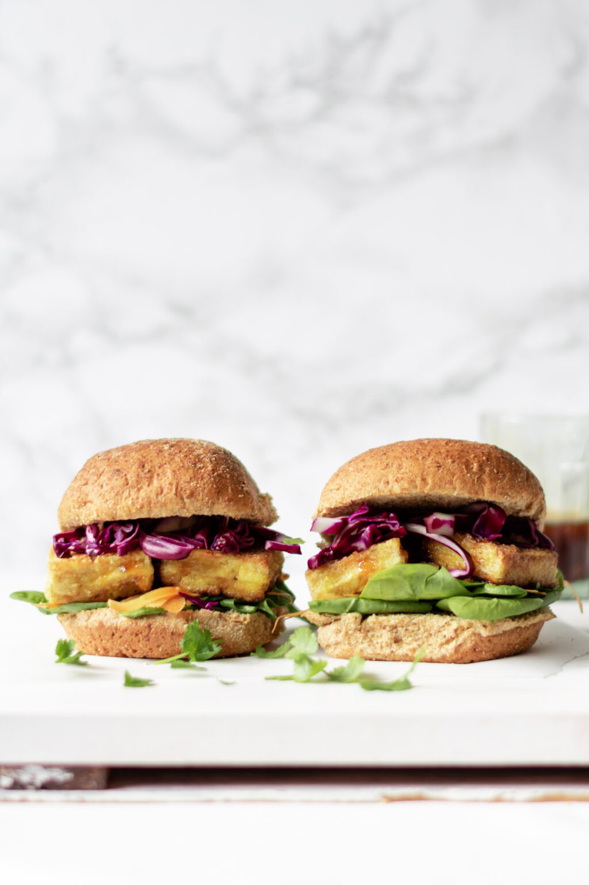

Tofu Burgers

What is Tofu Burgers
Burgers made of tofu filings.
Ingredients
For the crispy tofu burgers:
- 3.5 oz/ 100 grams Firm Tofu silken tofu will not work for this recipe
- 2 tablespoon Cornstarch aka cornflour
- ¼ teaspoon Salt
- ¼ teaspoon Chilli Powder
- 2 tbsp Sunflower Oil
- ¼ Red Cabbage shredded
- 1 Carrot grated
- 1 handful Spinach
- 2 Wholemeal Bread Rolls or gluten-free rolls
For the sticky sauce:
- 1 tablespoon Soy Sauce
- 2 tablespoon Sweet Chilli Sauce can sub ketchup
- ½ teaspoon Rice Vinegar
Instructions
- Firstly, cut the tofu into 1 cm thick slices. You can either cut 2-3 pieces of tofu for each burger, or one large slice.
- In a medium bowl, mix together the cornstarch, salt, and chilli powder. Set aside.
- Add the sunflower oil to a frying pan over medium heat. Once the pan is hot, coat the tofu thoroughly in the cornstarch mixture, before adding to the frying pan.
- Cook the tofu for 3-4 minutes on each side until golden and crisp.
- Prepare the sticky sauce by mixing together the soy sauce, sweet chilli sauce and rice vinegar in a small bowl.
- Layer up the bread rolls with the sauce, rainbow vegetables, and the crispy tofu. Serve immediately.
Yup Tasty Burger is ready!
